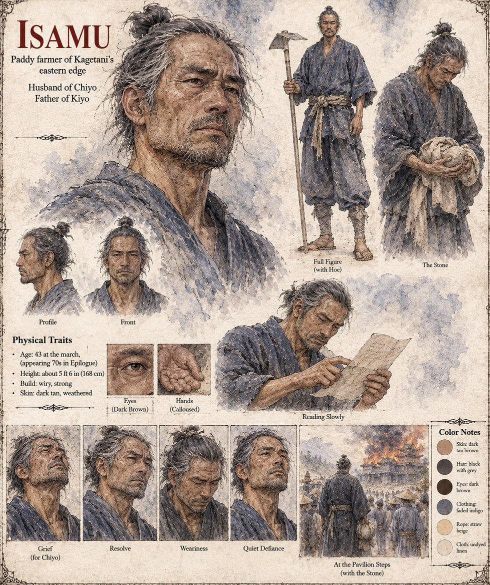

Isamu
Paddy farmer of Kagetani’s eastern edge · husband of Chiyo, father of Kiyo · carries the stone from Jakuen-ji · 43 at the march
A paddy farmer on the eastern edge of Kagetani, husband of Chiyo for fifteen years and father of Kiyo, and the man Part Four, What the Stone Gave Isamu, is named for. He can read, but not quickly. The pack’s synopsis puts the rest in a sentence: he is handed a clause and told where to put his mark by men with no patience left for softer language. Under the temple’s collateral clause he loses his wife and his daughter. He asks where they are and what six months means, and a steward tells him The debt is settled and turns back to the ledger room.
Door to door he compares debt numbers with his neighbours, among them Genzo, two fields east, who is the first to say aloud that his son’s debt was eleven koku, precisely, and he finds the same figure recurring. At Jakuen-ji he is met at night by a junior brother who can answer none of his questions, and he is told by a steward he does not recognise that the account shows four further koku and four further months.
The stone is found on Ennen’s body by Isamu, and he walks near the front of the column carrying it. He arrives at the pavilion steps with one unspoken sentence in his throat while the castle granary burns; the pack’s Prompt 14 draws him there motionless, the stone cool in his closed fist. He declines three offers of the lordship and keeps the stone wrapped in undyed cloth in the rice-chest for the rest of his life; in the Epilogue he is an old man in his seventies (the pack’s Prompt 15 makes it about seventy-five), white-haired, kneeling at the open chest. A notched marking stick hangs by his door.
The manuscript gives his age and his slow reading and no description, so what the sheet draws is the pack’s. It makes him wiry and strong through the shoulders at about 5 ft 6 in (168 cm), with an angular, deep-set, patient face, black hair shot with grey in a short topknot, short dark stubble, slow-blinking dark-brown eyes, dark weathered skin, wide calloused palms, and a faded indigo hemp tunic with a rope belt, wrapped lower legs and straw sandals. Its four expression panels are Grief (for Chiyo), Resolve, Weariness and Quiet Defiance. Its scenes are a full figure with a long-handled hoe; The Stone, head bowed over a bundle of undyed cloth; Reading Slowly, one finger under the line of a sheet of paper; and At the Pavilion Steps (with the Stone), seen from behind in a crowd before a burning castle. “Appearing 70s in Epilogue” is printed on the sheet but not drawn.